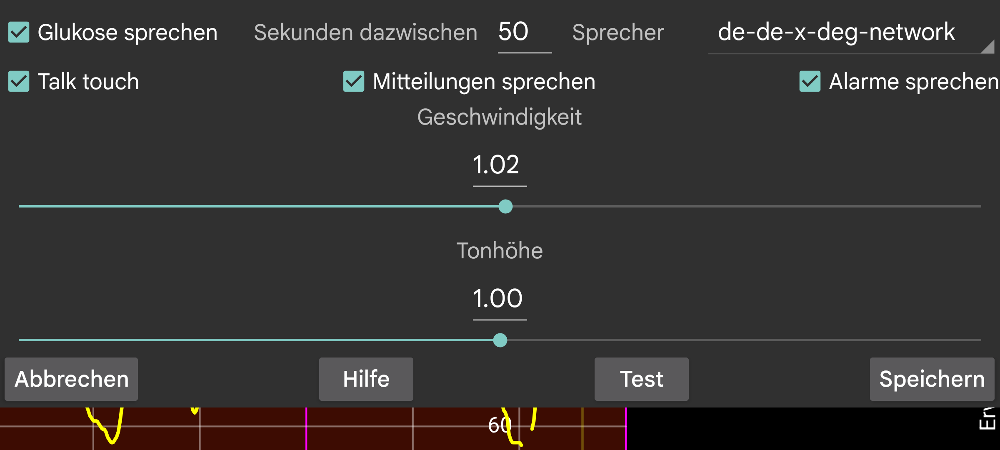

ar be de es fr hi it ja nl pl ru tr uk uz zh en
Sagt Glukosewerte, wenn sie eintreffen.
Sekunden zwischen : Gibt an, wie viele Sekunden Juggluco warten soll, bevor der nächste Glukosewert angezeigt wird. Glukosewerte werden immer sofort angesagt, wenn sie eintreffen. Wenn ein großer Wert angegeben wird, überspringt Juggluco Glukosewerte, die vor Ablauf dieses Zeitraums eintreffen.
Sprecher: Wählt einen Sprecher aus einer Liste möglicher Sprecher aus.
Geschwindigkeit: Eine höhere Zahl bedeutet schnelleres Sprechen.
Tonhöhe: Eine höhere Zahl bedeutet eine höhere Tonhöhe.
Test: sagt den letzten Glukosewert aus.
Auf einigen Telefonen müssen die Android-Einstellungen für Text-zu-Sprache geändert werden, damit es funktioniert. Manchmal müssen die Daten einer Sprache installiert oder die Konfiguration geändert werden. Auf Samsung-Handys muss "Speech Services by Google" anstelle von "Samsung Text-zu-Sprache Engine" eingestellt werden, um zwischen verschiedenen Stimmen wählen zu können. Diese Optionen finden Sie, indem Sie in den Android-Einstellungen nach Text-to-Speech suchen oder zu Sprache und Eingabe -> Text-zu-Sprache or System -> Sprache und Eingabe -> Sprachausgabe gehen. Hier können Sie "Google Sprachausgabe" oder "Speech services by Google" auswählen und Sprachdaten installieren. Bei anderen Telefonen befindet es sich unter Systemeinstellungen -> Bedienungshilfen -> Sehen -> Text-in-Sprache-Einstellungen.
Wenn Talk touch eingeschaltet ist, wird durch das Berühren bestimmter Stellen Sprechen erzeugt:
Berühren der aktuellen Glukose;
Berühren von Diagramm- und Scanpunkten;
Berührte "Mengen" werden ausgesprochen;
Das Datum dieses Punkts der Grafik wird angegeben, wenn die obere linke und rechte Ecke berührt wird;
Langes Drücken eines Menüpunkts;
Langes Drücken auf eine Menge in der Mengenliste (linkes mittleres Menü -> Liste).
Liest Textnachrichten, die vorübergehend auf dem Bildschirm angezeigt werden, und das Ergebnis des Scans (Fehlermeldungen und Glukosewert).
Liest den Glukosespiegel bei Alarmen für niedrigen und hohen Glukosespiegel vor. Es wird sowohl zu Beginn des Alarms als auch zum Zeitpunkt des Stoppens des Alarms gelesen.
Wählen Sie das aktive Profil aus. Standard ist das Standardprofil. Alle Einstellungen im linken Menü → Einstellungen → Alarme und Sprechen sind profilspezifisch.
Sie können Juggluco so konfigurieren, dass ein Profil zu einer bestimmten Tageszeit aktiviert wird.
Sie können die Lautstärke des Sprechen-Tons in den Android-Einstellungen unter „Ton“ erhöhen oder verringern. Wenn MEDIA ausgeschaltet ist, kann ich dies auf meinem Telefon über den Benachrichtigungston -Regler und auf meiner WearOS-Uhr über den Systemton -Regler tun. Bei aktiviertem „Nicht stören“ sollte der Ton nicht zu hören sein. Bei aktiviertem „MEDIA“ wird der Medienlautstärkeregler verwendet, und auf den meisten Telefonen ist er während des „Nicht stören“-Modus zu hören.
Das Aussprechen von Alarmen ist anders. Alarme werden in der Kategorie "Alarme" vorgelesen, wenn "Alarm ist Alarm" aktiviert ist. Auf meinem Handy regelt man die Lautstärke mit dem Alarm-Hebel, auf meiner Uhr mit dem Benachrichtigungs-Hebel.